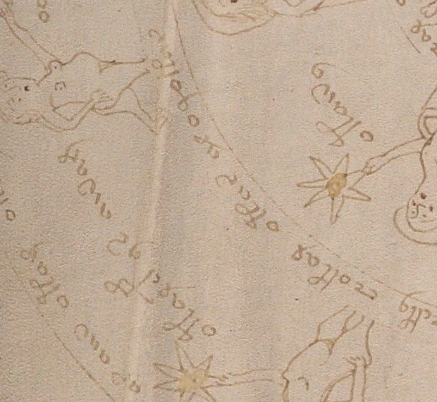
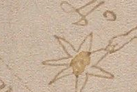
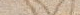

四幅图，
两路观察。
把粗文字区、细分备选与来源阅读框放回官方原图，逐项查看它们的重叠与分歧。分清空间位置、文字分组和语义归属，是这里的重点。
坐标协调记录，未认证字形或词义。矩形对已另行复算；未认证文字或对象归属。 Lz、Cc 是来源记录类型；来源条数、粗区数和细分备选数都不是词数。Cc 外接包络包含圆盘内部，不是环上墨迹路径。
固定 f70v1、f71r、f71v、f72r1，涉及三个物理叶；后两图共用同一官方画布。已知“十五人物”参与过选图，不能把相同粗区数当独立确认。其余八幅图尚未完成本项对照。
正在读取已冻结的公开记录。
先选图，再叠加观察
打开官方完整画布 ↗选择图层后，可以点击框或用记录下拉列表查看双方候选、原坐标和双版原行。
本图的完整记录
逐组展开即可查到所有来源条目、细分备选和损伤记录。“在图中查看”会打开对应图层；原始观察中的英文说明保留在每条记录详情中。
空间协调支持什么？
两框有正面积交集，只说明矩形阅读范围接触。它不是墨迹相交，不证明同一个词，也不认证文字属于某个人物、星形或容器。跨图历史起点、方向、跨环连接与词界仍未确定。
本图全部矩形对：包括零交集
面积单位是原画布像素平方；不显示或转换为正确率。全部零交集对保持可查。
一个重叠的角落，里面是什么？
f72r1.10 的阅读框与 ZI05 的角落重叠了 80 × 15 像素。下面保留原图裁区；蓝框只标出这块矩形交集，没有改动图像像素。



两路观察都认为，可见主要线段更符合星形图案的尖角轮廓，未识别出可独立归属的标签文字。极淡叠字仍不能完全排除。
原框、交集、候选与计数全部保留。这解释了一个矩形重叠为何不能直接算作文字重叠；没有据此认证唯一标签归属或词义。
选定案例的后续诊断，双方都已见过此前图面；同伴也是原图像观察者，不是第三方盲审。固定坐标来自官方画布 1006203；原生裁区不重采样、不增强、不补笔。